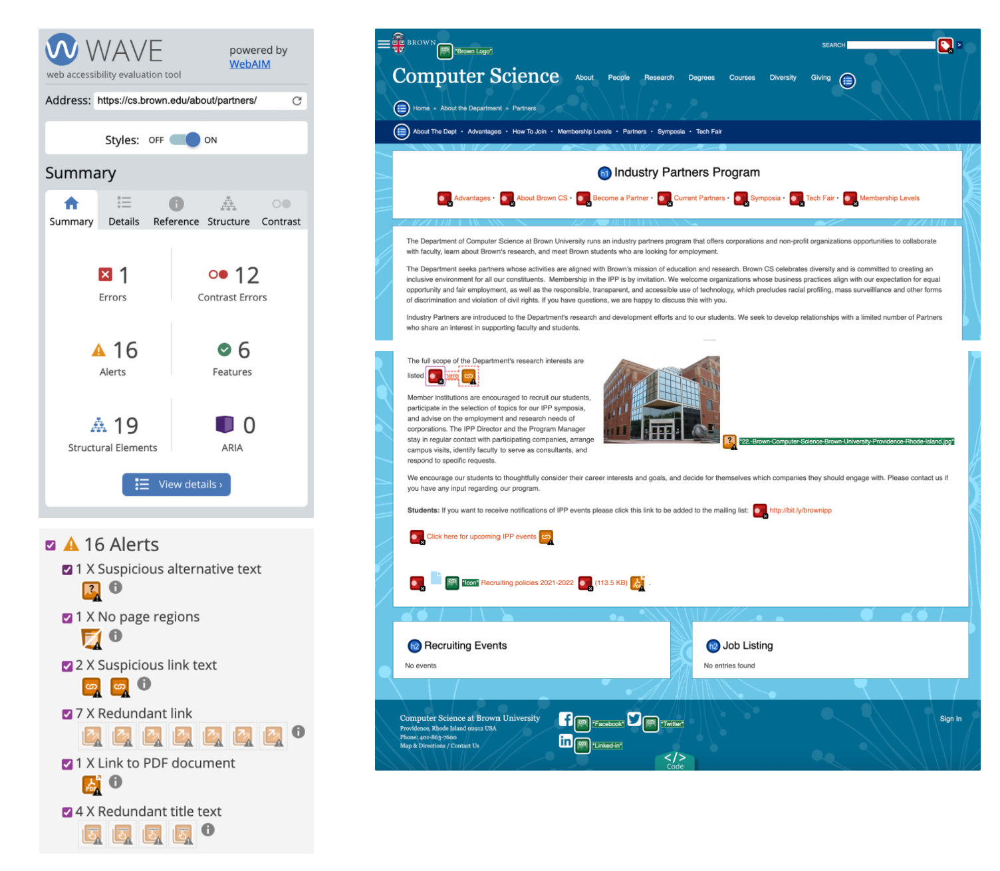
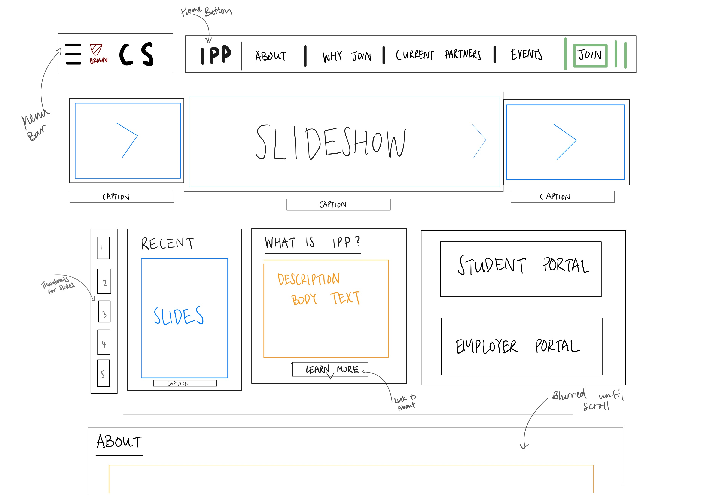
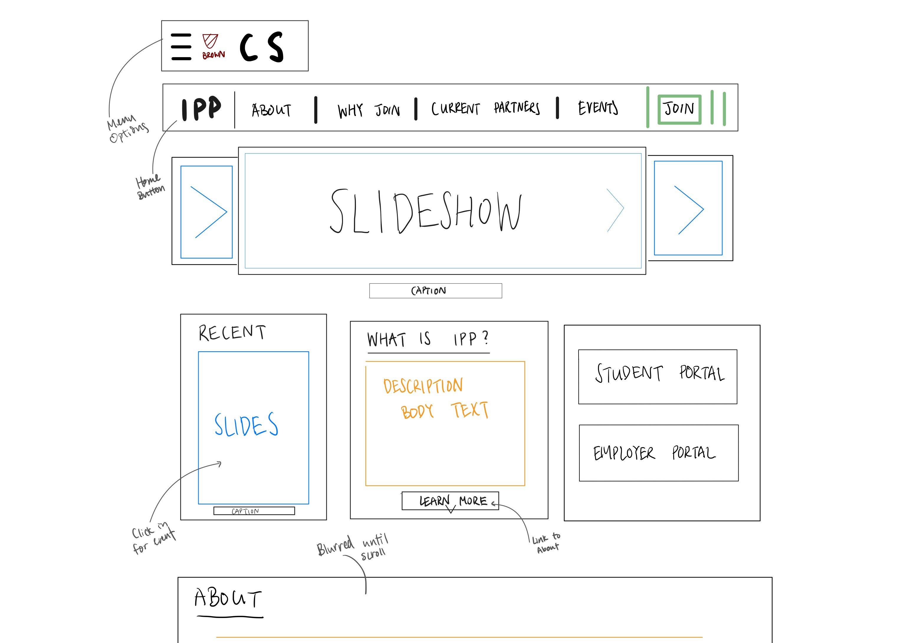
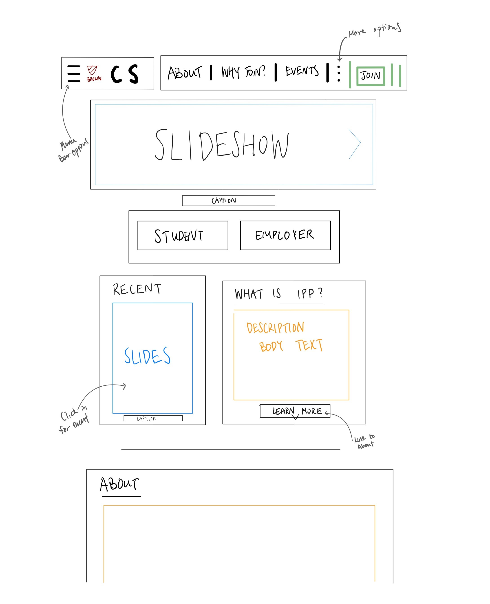
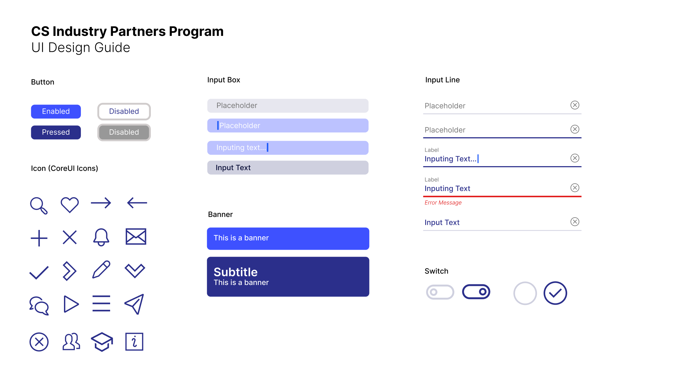
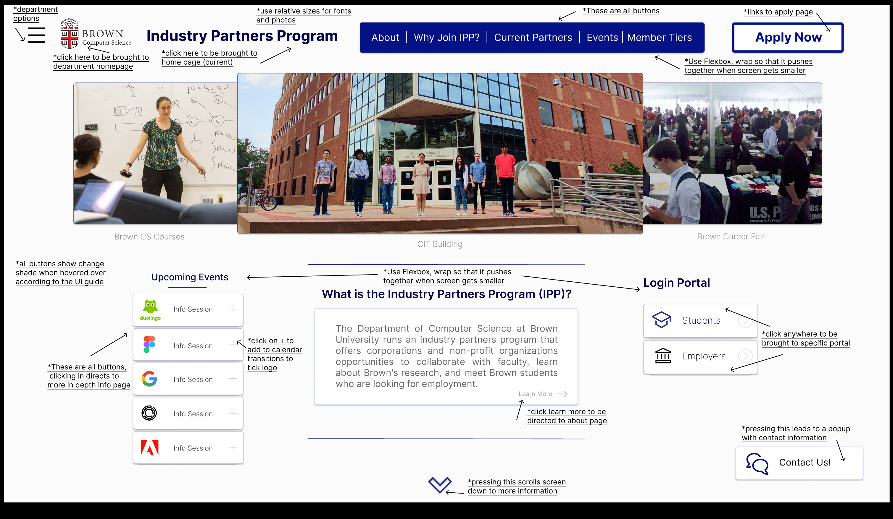
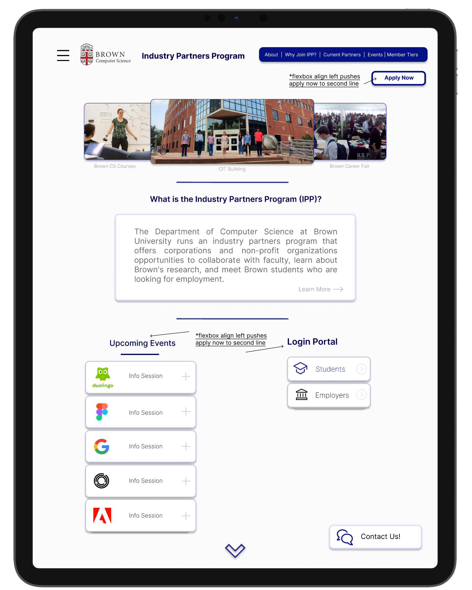
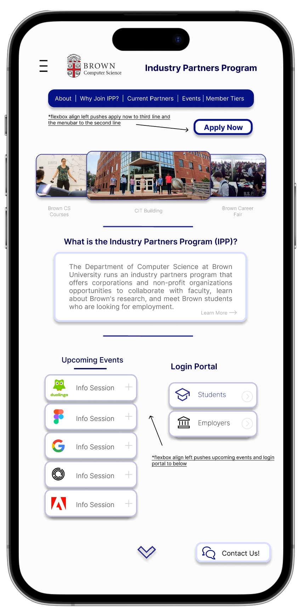

I chose this website because currently, it is very hard to use and get the information, access news, and overall ease of navigation.
Finding Problems
Usability/Efficiency
Links to functionality are not in form of buttons
multiple popup and non-integrated functions
department’s research interest (‘here’ hyperlink)
mailing list (new page, different interface)
upcoming events (google calendar, no search functionality)
recruiting policies (pdf link)
Empty containers with no information
recruiting events
job listing
advantages page iis easily overlooked as not linked within the become a partner page
once clicked on a page, it cannot return to the homepage except for very obscure directory links on the top (low contrast)
Learnability
No hierarchy to the different pages within the IPP
Unsorted information and no search & categorization functionality
advantages, general areas of research page, partners page, become a partner, symposia, membership level
become a partner is obscured and not easy to find, clicking in there is no direct way except to find contact information
hard to determine which membership level is the best fit
Memorability
lack of visual-based difference between different options
scattered links to different pages
lack of in-site communication methods
very minimal CSS styling
lack of photos/visuals/videos to give information
Conceptual Model
Enter first page
Read the description of the IPP
click on some of the links within the homepage depending on identity (students, employers)
Click on the orange links below the header to learn more
email the contact information provided for any actual collaboration (employers)
| Accessibility |

fig. 2 - The current CS IPP website homepage through WAVE
⭐Summary
We see that there are many contrast errors as we have observed above and many of the alt tags are just the
file names. Due to the many text based links and direct hypertext description, it may not clear what the
functionality of clicking it does. Multiple new pages and files makes it hard to navigate for users
needing accessibility. The lack of regions make it hard to accessibility users to know where they are on
the page and there are many repeated links on the same page, creating ambiguity for functionality.
| Part 2: Visual Redesign |
Lofi Prototypes

Fig. 3 - Large Display (4K) Lofi Prototype

Fig. 4 - Tablet (iPad Pro 12.9") Lofi Prototype

Fig. 5 - Mobile (iPhone 14 Pro Max) Lofi Prototype
Visual Design Style Guide

Fig. 6 - IPP Website UI Design Guide
Hifi Prototypes

Fig. 7 - Annotated Large Display (4K) Hifi Prototype

Fig. 8 - Annotated Tablet (iPad Pro 12.9") Hifi Prototype

Fig. 9 - Annotated Mobile (iPhone 14 Pro Max) Hifi Prototype